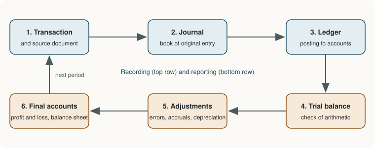

Chapter 3: Double Entry: Journal, Ledger and Trial Balance¶
Recording every transaction twice, posting it to accounts and checking the arithmetic
Learning outcomes
After studying this chapter you should be able to:
- Explain the principle of double entry and the form of an account.
- Classify accounts and apply the rules of debit and credit, both in the modern form and in the traditional form.
- Record transactions in the journal with correct narrations, including compound and opening entries.
- Post journal entries to ledger accounts and balance the accounts.
- Prepare a trial balance and explain what it does and does not prove.
3.1 Accounts and double entry¶
An account is a record, kept under one heading, of all the transactions that affect one item: one account for cash, one for each customer, one for rent, one for sales, and so on. The collection of all the accounts of a business is the ledger.
Each account has two sides. The left side is the debit side (Dr) and the right side is the credit side (Cr). Drawn in its simplest form, an account looks like the letter T, which is why it is often called a T-account:
| Dr: Date | Particulars | ₹ | Cr: Date | Particulars | ₹ |
|---|---|---|---|---|---|
| debit entries | credit entries |
Table 3.1. The form of a ledger account.
The words debit and credit mean nothing more than left and right. They do not mean good or bad, and "credit" in accounting does not mean the same as credit in a bank statement seen from the customer's side.
Double entry is the principle that every transaction is recorded in at least two accounts, with a debit in one and an equal credit in another, so that the total of all debits always equals the total of all credits. It follows from the accounting equation (Chapter 2): every transaction keeps the equation in balance, and recording the increases and decreases on the sides laid down by the equation keeps the debits equal to the credits.
Key idea
For every debit there is an equal credit. If the debits and credits of a transaction do not agree, the entry is wrong.
3.2 The rules of debit and credit¶
The modern (accounting equation) approach¶
The accounting equation gives the rules directly, as Chapter 2 showed. Accounts are grouped into five types, and the side on which each type increases is fixed:
| Type of account | Examples | Increase | Decrease | Normal balance |
|---|---|---|---|---|
| Assets | Cash, bank, debtors, inventory, furniture, machinery | Debit | Credit | Debit |
| Expenses and losses | Purchases, wages, rent, salaries, discount allowed | Debit | Credit | Debit |
| Drawings | Drawings | Debit | Credit | Debit |
| Liabilities | Creditors, loans, outstanding expenses | Credit | Debit | Credit |
| Capital | Capital | Credit | Debit | Credit |
| Revenue and gains | Sales, commission received, discount received | Credit | Debit | Credit |
Table 3.2. The modern rules of debit and credit.
To journalise a transaction with this approach, ask three questions: Which accounts are affected? What type is each? Does each increase or decrease? The answers fix the debit and the credit.
The traditional approach¶
An older approach, still widely taught, classifies accounts into three kinds and gives each kind a rule:
- Personal accounts are accounts of persons and organisations. They are natural (an individual such as Ravi), artificial (a firm, company, bank or club such as Mehta & Co or State Bank) or representative (an account that stands for persons, such as Outstanding Salaries, which represents the employees who are owed salary, or Prepaid Insurance, which represents the insurer). Capital and drawings are personal accounts of the owner.
- Real accounts are accounts of things owned: tangible (cash, furniture, machinery, buildings, inventory) or intangible (goodwill, patents, trademarks).
- Nominal accounts are accounts of expenses, losses, incomes and gains (rent, salaries, commission received, interest earned).
| Kind of account | Rule |
|---|---|
| Personal | Debit the receiver, credit the giver |
| Real | Debit what comes in, credit what goes out |
| Nominal | Debit all expenses and losses, credit all incomes and gains |
Table 3.3. The traditional ("golden") rules of debit and credit.
The two approaches always give the same entry. When a business pays rent in cash, the modern approach says: rent (an expense) increases, so debit Rent; cash (an asset) decreases, so credit Cash. The traditional approach says: Rent is nominal, an expense, so debit it; Cash is real and goes out, so credit it.
Caution
Purchases and Sales are not assets. Goods are recorded in separate accounts according to the direction of movement: goods bought for resale are debited to Purchases Account, goods sold are credited to Sales Account, goods returned by customers are debited to Sales Returns (Returns Inward) Account and goods returned to suppliers are credited to Purchases Returns (Returns Outward) Account. The value of goods still unsold is found by counting at the end of the period (Chapter 8).
3.3 Source documents and vouchers¶
Every entry in the books should rest on evidence. The documents that provide it are called source documents: cash memos for cash sales, invoices (bills) for credit sales and purchases, receipts for money received, cheque counterfoils and bank pay-in slips, debit notes and credit notes for returns, salary sheets, and so on.
From a source document, an accounting voucher is often prepared inside the business: a written instruction that names the accounts to be debited and credited, the amount and the narration, signed by the person who prepares it and by the person who authorises it. Vouchers are numbered in sequence and kept on file. In accounting software (Chapter 14), entering a voucher is the way every transaction is recorded.
3.4 The journal¶
The journal is the book of original entry, in which transactions are first recorded in the order of their dates. Each record is called a journal entry, and the act of recording is called journalising. The journal shows, for each transaction, the accounts debited and credited, the amounts and a short explanation called the narration.
| Date | Particulars | L.F. | Dr (₹) | Cr (₹) |
|---|---|---|---|---|
| Year, month, day | Name of account debited ... Dr | Amount | ||
| To Name of account credited | Amount | |||
| (Being the narration) |
Table 3.4. The form of the journal. L.F. is the ledger folio, the page of the ledger to which the entry is posted.
The debit account is written first, close to the left, followed by "Dr". The credit account is written on the next line, set in a little and preceded by "To". The narration, beginning "Being ...", follows in brackets.
Example 3.1 Journalising the transactions of Sharma Electricals
Vikram Sharma starts an electrical goods shop, Sharma Electricals, in April 2025. Its transactions are:
| Date | Transaction |
|---|---|
| Apr 1 | Started business with cash ₹2,00,000 |
| Apr 2 | Deposited ₹1,20,000 in the bank |
| Apr 3 | Bought goods on credit from Mehta & Co ₹80,000 |
| Apr 5 | Bought office equipment, paying by cheque ₹30,000 |
| Apr 8 | Sold goods on credit to Gupta Stores ₹45,000 |
| Apr 10 | Cash sales ₹25,000 |
| Apr 12 | Paid Mehta & Co by cheque ₹50,000 |
| Apr 15 | Received cash from Gupta Stores ₹30,000 |
| Apr 18 | Cash purchases ₹12,000 |
| Apr 20 | Paid rent in cash ₹8,000 |
| Apr 25 | Withdrew cash for personal use ₹4,000 |
| Apr 28 | Received commission in cash ₹3,000 |
| Apr 30 | Paid salaries by cheque ₹10,000 |
| Apr 30 | Paid electricity bill in cash ₹2,000 |
Journal of Sharma Electricals
| Date 2025 | Particulars | L.F. | Dr (₹) | Cr (₹) |
|---|---|---|---|---|
| Apr 1 | Cash A/c ... Dr | 2,00,000 | ||
| To Capital A/c | 2,00,000 | |||
| (Being business started with cash) | ||||
| Apr 2 | Bank A/c ... Dr | 1,20,000 | ||
| To Cash A/c | 1,20,000 | |||
| (Being cash deposited in the bank) | ||||
| Apr 3 | Purchases A/c ... Dr | 80,000 | ||
| To Mehta & Co | 80,000 | |||
| (Being goods bought on credit) | ||||
| Apr 5 | Office Equipment A/c ... Dr | 30,000 | ||
| To Bank A/c | 30,000 | |||
| (Being office equipment bought by cheque) | ||||
| Apr 8 | Gupta Stores ... Dr | 45,000 | ||
| To Sales A/c | 45,000 | |||
| (Being goods sold on credit) | ||||
| Apr 10 | Cash A/c ... Dr | 25,000 | ||
| To Sales A/c | 25,000 | |||
| (Being cash sales) | ||||
| Apr 12 | Mehta & Co ... Dr | 50,000 | ||
| To Bank A/c | 50,000 | |||
| (Being payment made by cheque) | ||||
| Apr 15 | Cash A/c ... Dr | 30,000 | ||
| To Gupta Stores | 30,000 | |||
| (Being cash received from a customer) | ||||
| Apr 18 | Purchases A/c ... Dr | 12,000 | ||
| To Cash A/c | 12,000 | |||
| (Being goods bought for cash) | ||||
| Apr 20 | Rent A/c ... Dr | 8,000 | ||
| To Cash A/c | 8,000 | |||
| (Being rent paid) | ||||
| Apr 25 | Drawings A/c ... Dr | 4,000 | ||
| To Cash A/c | 4,000 | |||
| (Being cash withdrawn for personal use) | ||||
| Apr 28 | Cash A/c ... Dr | 3,000 | ||
| To Commission Received A/c | 3,000 | |||
| (Being commission received) | ||||
| Apr 30 | Salaries A/c ... Dr | 10,000 | ||
| To Bank A/c | 10,000 | |||
| (Being salaries paid by cheque) | ||||
| Apr 30 | Electricity A/c ... Dr | 2,000 | ||
| To Cash A/c | 2,000 | |||
| (Being electricity bill paid) | ||||
| Total | 6,19,000 | 6,19,000 |
Reasoning for three of the entries.
- Apr 3. Purchases (goods for resale, an expense) increase: debit. Mehta & Co, a creditor (liability; traditionally the giver), increases: credit.
- Apr 8. Gupta Stores becomes a debtor (asset; traditionally the receiver): debit. Sales (revenue) increase: credit.
- Apr 25. Drawings reduce the owner's capital: debit Drawings. Cash goes out: credit Cash.
3.5 Special journal entries¶
Compound entries¶
When a transaction affects more than two accounts, or when several transactions of the same kind on the same date are recorded together, a single compound entry with more than one debit or more than one credit is used. The total of the debits must still equal the total of the credits.
The opening entry¶
A business that continues from one year to the next starts the new year's books with an opening entry, which brings in the balances of the assets and liabilities at the end of the previous year. Assets are debited, liabilities are credited, and the capital (the excess of assets over liabilities) is credited.
Discounts¶
A trade discount is a reduction in the list price given by a seller to a trader who buys for resale, usually for buying in quantity. It is deducted on the invoice and is not recorded in the books: the purchase or sale is recorded at the net amount. A cash discount is an allowance for prompt payment. It is recorded: the seller debits Discount Allowed (an expense) and the buyer credits Discount Received (a gain).
Example 3.2 Opening, compound and other special entries
(a) On 1 April 2025 the balances of a business were: cash ₹15,000; bank ₹60,000; inventory ₹40,000; debtors ₹25,000; furniture ₹30,000; creditors ₹35,000; bank loan ₹50,000. Capital = (15,000 + 60,000 + 40,000 + 25,000 + 30,000) − (35,000 + 50,000) = 1,70,000 − 85,000 = ₹85,000.
(b) Received a cheque for ₹29,400 from a customer, Patil, in full settlement of ₹30,000.
(c) The owner took goods costing ₹2,000 for personal use.
(d) Goods costing ₹1,500 were distributed as free samples.
(e) Bought goods with a list price of ₹20,000 on credit from Khan Bros, less 10% trade discount.
(f) Goods costing ₹5,000 were destroyed by fire; the insurance company admitted a claim for ₹3,000.
| Date 2025 | Particulars | L.F. | Dr (₹) | Cr (₹) |
|---|---|---|---|---|
| (a) Apr 1 | Cash A/c ... Dr | 15,000 | ||
| Bank A/c ... Dr | 60,000 | |||
| Inventory A/c ... Dr | 40,000 | |||
| Debtors A/c ... Dr | 25,000 | |||
| Furniture A/c ... Dr | 30,000 | |||
| To Creditors A/c | 35,000 | |||
| To Bank Loan A/c | 50,000 | |||
| To Capital A/c | 85,000 | |||
| (Being balances brought forward from the previous year) | ||||
| (b) | Bank A/c ... Dr | 29,400 | ||
| Discount Allowed A/c ... Dr | 600 | |||
| To Patil | 30,000 | |||
| (Being cheque received in full settlement, discount allowed) | ||||
| (c) | Drawings A/c ... Dr | 2,000 | ||
| To Purchases A/c | 2,000 | |||
| (Being goods withdrawn by the owner for personal use) | ||||
| (d) | Advertisement A/c ... Dr | 1,500 | ||
| To Purchases A/c | 1,500 | |||
| (Being goods distributed as free samples) | ||||
| (e) | Purchases A/c ... Dr | 18,000 | ||
| To Khan Bros | 18,000 | |||
| (Being goods bought at list price ₹20,000 less 10% trade discount) | ||||
| (f) | Insurance Claim A/c ... Dr | 3,000 | ||
| Loss by Fire A/c ... Dr | 2,000 | |||
| To Purchases A/c | 5,000 | |||
| (Being goods destroyed by fire and claim admitted) |
Notes: in (c), (d) and (f) the goods leave the business other than by sale, so they are taken out of Purchases at cost. In (e) the trade discount of ₹2,000 does not appear anywhere. In (f) the part of the loss not covered by insurance is a loss of the business; the insurance claim is an asset until the money is received.
3.6 The ledger: posting and balancing¶
The journal records transactions in date order, but it does not tell you how much cash there is or how much Gupta Stores owes. For that, each journal entry is transferred to the accounts it names. This transfer is called posting, and the book of accounts is the ledger, the principal book of the accounting system.
How to post¶
For each journal entry:
- In the account that is debited, write on the debit side the date, "To" and the name of the account credited, and the amount.
- In the account that is credited, write on the credit side the date, "By" and the name of the account debited, and the amount.
- Write the page number of the ledger account in the L.F. column of the journal, and the journal page in the J.F. column of the account, so that every entry can be traced both ways.
The name written in each account is that of the other account in the entry. Reading Cash Account, a line "To Sales A/c 25,000" tells you that cash came in from sales.
How to balance an account¶
At the end of a period each account is balanced:
- Add both sides.
- Write the difference on the lighter side as "By Balance c/d" (credit side) or "To Balance c/d" (debit side), so that both sides have the same total.
- Write the totals on the same line on both sides.
- Bring the balance down on the opposite side at the start of the next period as "To Balance b/d" or "By Balance b/d".
An account whose debit side is larger has a debit balance; one whose credit side is larger has a credit balance. Assets, expenses and drawings normally have debit balances; liabilities, capital and revenue normally have credit balances.
Example 3.3 Ledger of Sharma Electricals
The journal entries of Example 3.1 are posted below. The main accounts are shown in full.
Cash Account
| Date | Particulars | ₹ | Date | Particulars | ₹ |
|---|---|---|---|---|---|
| Apr 1 | To Capital A/c | 2,00,000 | Apr 2 | By Bank A/c | 1,20,000 |
| Apr 10 | To Sales A/c | 25,000 | Apr 18 | By Purchases A/c | 12,000 |
| Apr 15 | To Gupta Stores | 30,000 | Apr 20 | By Rent A/c | 8,000 |
| Apr 28 | To Commission Received A/c | 3,000 | Apr 25 | By Drawings A/c | 4,000 |
| Apr 30 | By Electricity A/c | 2,000 | |||
| Apr 30 | By Balance c/d | 1,12,000 | |||
| 2,58,000 | 2,58,000 | ||||
| May 1 | To Balance b/d | 1,12,000 |
Bank Account
| Date | Particulars | ₹ | Date | Particulars | ₹ |
|---|---|---|---|---|---|
| Apr 2 | To Cash A/c | 1,20,000 | Apr 5 | By Office Equipment A/c | 30,000 |
| Apr 12 | By Mehta & Co | 50,000 | |||
| Apr 30 | By Salaries A/c | 10,000 | |||
| Apr 30 | By Balance c/d | 30,000 | |||
| 1,20,000 | 1,20,000 | ||||
| May 1 | To Balance b/d | 30,000 |
Capital Account
| Date | Particulars | ₹ | Date | Particulars | ₹ |
|---|---|---|---|---|---|
| Apr 30 | To Balance c/d | 2,00,000 | Apr 1 | By Cash A/c | 2,00,000 |
| 2,00,000 | 2,00,000 | ||||
| May 1 | By Balance b/d | 2,00,000 |
Purchases Account
| Date | Particulars | ₹ | Date | Particulars | ₹ |
|---|---|---|---|---|---|
| Apr 3 | To Mehta & Co | 80,000 | Apr 30 | By Balance c/d | 92,000 |
| Apr 18 | To Cash A/c | 12,000 | |||
| 92,000 | 92,000 | ||||
| May 1 | To Balance b/d | 92,000 |
Sales Account
| Date | Particulars | ₹ | Date | Particulars | ₹ |
|---|---|---|---|---|---|
| Apr 30 | To Balance c/d | 70,000 | Apr 8 | By Gupta Stores | 45,000 |
| Apr 10 | By Cash A/c | 25,000 | |||
| 70,000 | 70,000 | ||||
| May 1 | By Balance b/d | 70,000 |
Mehta & Co (creditor)
| Date | Particulars | ₹ | Date | Particulars | ₹ |
|---|---|---|---|---|---|
| Apr 12 | To Bank A/c | 50,000 | Apr 3 | By Purchases A/c | 80,000 |
| Apr 30 | To Balance c/d | 30,000 | |||
| 80,000 | 80,000 | ||||
| May 1 | By Balance b/d | 30,000 |
Gupta Stores (debtor)
| Date | Particulars | ₹ | Date | Particulars | ₹ |
|---|---|---|---|---|---|
| Apr 8 | To Sales A/c | 45,000 | Apr 15 | By Cash A/c | 30,000 |
| Apr 30 | By Balance c/d | 15,000 | |||
| 45,000 | 45,000 | ||||
| May 1 | To Balance b/d | 15,000 |
Rent Account (the other single-entry accounts look the same)
| Date | Particulars | ₹ | Date | Particulars | ₹ |
|---|---|---|---|---|---|
| Apr 20 | To Cash A/c | 8,000 | Apr 30 | By Balance c/d | 8,000 |
| 8,000 | 8,000 | ||||
| May 1 | To Balance b/d | 8,000 |
The remaining accounts each contain one entry: Office Equipment (debit ₹30,000, from Bank), Drawings (debit ₹4,000, from Cash), Salaries (debit ₹10,000, from Bank), Electricity (debit ₹2,000, from Cash) and Commission Received (credit ₹3,000, from Cash). An account with a single entry need not be formally balanced; its one figure is its balance.
Tip
Check each balance against common sense. Cash and bank can never have a credit balance in Cash Account (you cannot hold less than no cash), although a bank account can show a credit balance when the business has an overdraft. A debtor normally has a debit balance and a creditor a credit balance; an unusual balance usually signals a posting error.
3.7 The trial balance¶
When all the accounts have been balanced, their balances are listed in a statement called the trial balance: debit balances in one column and credit balances in another. Because every transaction was recorded with equal debits and credits, the two columns should have the same total.
The trial balance has three uses:
- It checks the arithmetical accuracy of the journal and the ledger. If the totals disagree, an error has certainly been made.
- It summarises the ledger on a single page.
- It is the starting point for the final accounts (Chapter 8).
There are two ways to prepare it. The balances method, used here and in practice, lists the balance of each account. The totals method lists the total of the debit side and the total of the credit side of each account; it also agrees, but it is longer and less useful for preparing final accounts.
Example 3.4 Trial balance of Sharma Electricals
Trial Balance of Sharma Electricals as at 30 April 2025
| Name of account | L.F. | Debit balance (₹) | Credit balance (₹) |
|---|---|---|---|
| Cash | 1,12,000 | ||
| Bank | 30,000 | ||
| Capital | 2,00,000 | ||
| Purchases | 92,000 | ||
| Mehta & Co (creditor) | 30,000 | ||
| Office Equipment | 30,000 | ||
| Gupta Stores (debtor) | 15,000 | ||
| Sales | 70,000 | ||
| Rent | 8,000 | ||
| Drawings | 4,000 | ||
| Commission Received | 3,000 | ||
| Salaries | 10,000 | ||
| Electricity | 2,000 | ||
| Total | 3,03,000 | 3,03,000 |
Debit total: 1,12,000 + 30,000 + 92,000 + 30,000 + 15,000 + 8,000 + 4,000 + 10,000 + 2,000 = ₹3,03,000. Credit total: 2,00,000 + 30,000 + 70,000 + 3,000 = ₹3,03,000. The trial balance agrees.

What the trial balance does not prove¶
A trial balance that agrees shows only that total debits equal total credits. It does not prove that the books are correct. Several kinds of error leave it in agreement:
- Errors of omission: a transaction left out completely (neither debit nor credit recorded).
- Errors of commission of certain kinds: posting to the wrong account of the same class, such as debiting Gupta Stores instead of Gupta Traders.
- Errors of principle: recording a transaction in the wrong class of account, such as debiting the purchase of furniture to Purchases.
- Compensating errors: two errors of equal amount on opposite sides that cancel each other.
- Errors of original entry: a wrong amount entered in the book of original entry, then posted correctly on both sides.
Chapter 6 deals with the location and correction of errors, including those that the trial balance cannot reveal.
Example 3.5 Preparing a trial balance from a list of balances
The following balances were taken from the books of Leela Traders on 31 March 2026: Capital ₹1,50,000; Purchases ₹2,10,000; Sales ₹3,05,000; Debtors ₹42,000; Creditors ₹36,000; Wages ₹28,000; Rent ₹24,000; Machinery ₹90,000; Bank ₹19,000; Cash ₹6,000; Drawings ₹18,000; Discount received ₹2,000; Opening inventory ₹30,000; Bank loan ₹40,000; Interest on loan ₹4,000; Sales returns ₹5,000; Purchases returns ₹3,000; Commission received ₹10,000; Salaries ₹30,000; Furniture ₹40,000.
| Name of account | Debit (₹) | Credit (₹) |
|---|---|---|
| Capital | 1,50,000 | |
| Purchases | 2,10,000 | |
| Sales | 3,05,000 | |
| Debtors | 42,000 | |
| Creditors | 36,000 | |
| Wages | 28,000 | |
| Rent | 24,000 | |
| Machinery | 90,000 | |
| Bank | 19,000 | |
| Cash | 6,000 | |
| Drawings | 18,000 | |
| Discount received | 2,000 | |
| Opening inventory | 30,000 | |
| Bank loan | 40,000 | |
| Interest on loan | 4,000 | |
| Sales returns | 5,000 | |
| Purchases returns | 3,000 | |
| Commission received | 10,000 | |
| Salaries | 30,000 | |
| Furniture | 40,000 | |
| Total | 5,46,000 | 5,46,000 |
Opening inventory is an asset at the start of the year, so it is a debit. Sales returns reduce sales, so they are a debit; purchases returns reduce purchases, so they are a credit.
3.8 Summary¶
Summary
- An account records all transactions affecting one item; its left side is the debit side and its right side the credit side. The ledger is the book of all the accounts.
- Double entry records every transaction with equal debits and credits.
- Modern rules: assets, expenses and drawings increase on the debit side; liabilities, capital and revenue increase on the credit side. Traditional rules: personal, debit the receiver and credit the giver; real, debit what comes in and credit what goes out; nominal, debit expenses and losses and credit incomes and gains.
- The journal records transactions in date order with a narration. Compound entries have more than one debit or credit; the opening entry brings forward last year's balances. Trade discount is not recorded; cash discount is.
- Posting transfers each journal entry to the debit of one account and the credit of another. Accounts are balanced at the end of each period.
- The trial balance lists all the balances; equal totals prove arithmetical accuracy but not the absence of errors of omission, commission, principle, original entry or compensating errors.
3.9 Exercises¶
Exercise 1
Classify each account as personal, real or nominal, and state its normal balance: (a) Capital; (b) Machinery; (c) Wages; (d) Outstanding rent; (e) Goodwill; (f) Interest received; (g) Canara Bank (a current account); (h) Prepaid insurance.
Answer
(a) personal, credit; (b) real, debit; (c) nominal, debit; (d) personal (representative), credit; (e) real (intangible), debit; (f) nominal, credit; (g) personal (artificial), debit when the business has money in the account; (h) personal (representative), debit.
Exercise 2
Journalise: (a) bought machinery from Ajay Engineering on credit ₹75,000; (b) paid wages ₹6,000 in cash; (c) sold goods to Rekha for ₹18,000, receiving ₹10,000 in cash and the rest on credit; (d) paid ₹19,500 by cheque to Ajay Engineering in full settlement of ₹20,000; (e) interest of ₹1,200 credited by the bank.
Answer
| Particulars | Dr (₹) | Cr (₹) |
|---|---|---|
| (a) Machinery A/c ... Dr | 75,000 | |
| To Ajay Engineering | 75,000 | |
| (b) Wages A/c ... Dr | 6,000 | |
| To Cash A/c | 6,000 | |
| (c) Cash A/c ... Dr | 10,000 | |
| Rekha ... Dr | 8,000 | |
| To Sales A/c | 18,000 | |
| (d) Ajay Engineering ... Dr | 20,000 | |
| To Bank A/c | 19,500 | |
| To Discount Received A/c | 500 | |
| (e) Bank A/c ... Dr | 1,200 | |
| To Interest Received A/c | 1,200 |
Machinery bought on credit is not "purchases", because it is not bought for resale.
Exercise 3
Post the entries of Exercise 2 to Ajay Engineering's account and balance it.
Answer
Ajay Engineering
| Particulars | ₹ | Particulars | ₹ |
|---|---|---|---|
| To Bank A/c | 19,500 | By Machinery A/c | 75,000 |
| To Discount Received A/c | 500 | ||
| To Balance c/d | 55,000 | ||
| Total | 75,000 | Total | 75,000 |
| By Balance b/d | 55,000 |
The business still owes Ajay Engineering ₹55,000: a credit balance, as expected for a creditor.
Exercise 4
Prepare a trial balance from these balances of Joseph & Co at 31 March 2026: Capital ₹2,00,000; Building ₹1,50,000; Purchases ₹1,80,000; Sales ₹2,60,000; Debtors ₹35,000; Creditors ₹25,000; Salaries ₹40,000; Cash ₹12,000; Bank ₹28,000; Drawings ₹15,000; Interest received ₹5,000; Opening inventory ₹30,000.
Answer
Debit balances: Building 1,50,000 + Purchases 1,80,000 + Debtors 35,000 + Salaries 40,000 + Cash 12,000 + Bank 28,000 + Drawings 15,000 + Opening inventory 30,000 = ₹4,90,000.
Credit balances: Capital 2,00,000 + Sales 2,60,000 + Creditors 25,000 + Interest received 5,000 = ₹4,90,000.
The trial balance agrees.
Exercise 5
A trial balance agrees. Does that mean the books contain no errors? Give two examples to support your answer.
Answer
No. An agreed trial balance proves only that debits equal credits. For example, (1) a credit sale of ₹5,000 omitted altogether leaves both columns ₹5,000 lower but equal; (2) furniture of ₹10,000 debited to Purchases instead of Furniture is an error of principle that keeps the totals equal while misstating both accounts.
Exercise 6
The owner of a business took goods costing ₹3,500 for use at home and paid his son's college fees of ₹12,000 from the business bank account. Journalise both.
Answer
| Particulars | Dr (₹) | Cr (₹) |
|---|---|---|
| Drawings A/c ... Dr | 3,500 | |
| To Purchases A/c | 3,500 | |
| (Being goods taken for personal use) | ||
| Drawings A/c ... Dr | 12,000 | |
| To Bank A/c | 12,000 | |
| (Being personal fees paid from the business account) |
3.10 Quiz¶
Check your understanding of Chapter 3
Exercise 1
Under the traditional rules, a real account is debited when
- an expense is incurred
- something comes into the business
- a person receives a benefit
- an income is earned
Answer
something comes into the business
Exercise 2
Goods sold on credit to Neha for ₹12,000. The correct entry is
- Debit Sales, credit Neha
- Debit Neha, credit Sales
- Debit Cash, credit Sales
- Debit Neha, credit Purchases
Answer
Debit Neha, credit Sales
Exercise 3
Goods with a list price of ₹10,000 are bought on credit less 20% trade discount. At what amount are purchases recorded?
- ₹10,000
- ₹8,000
- ₹12,000
- ₹2,000
Answer
₹8,000
Trade discount is deducted on the invoice and not recorded in the books.
Exercise 4
Which error is revealed by a trial balance that does not agree?
- A transaction omitted completely
- Furniture debited to Purchases
- A debit posted as ₹540 instead of ₹450, the credit being correct
- Two equal errors on opposite sides
Answer
A debit posted as ₹540 instead of ₹450, the credit being correct
Exercise 5
An account has debits totalling ₹48,000 and credits totalling ₹31,500. What is its balance, in rupees?
Answer
16500 / 16,500 / ₹16,500
The balance is 48,000 − 31,500 = 16,500, a debit balance.
Exercise 6
The normal balance of Discount Received Account is
- debit
- credit
Answer
credit
Exercise 7
Match each account with its classification under the traditional approach.
| A | B |
|---|---|
| Outstanding wages | nominal |
| Goodwill | personal (artificial) |
| Rent paid | personal (representative) |
| Mehta & Co | real (intangible) |
Answer
Outstanding wages — personal (representative); Goodwill — real (intangible); Rent paid — nominal; Mehta & Co — personal (artificial)